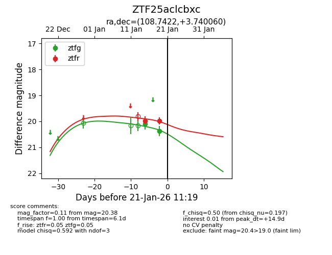
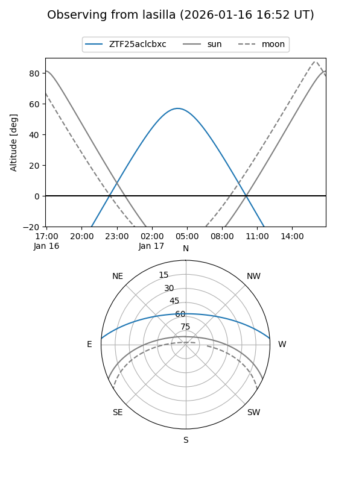
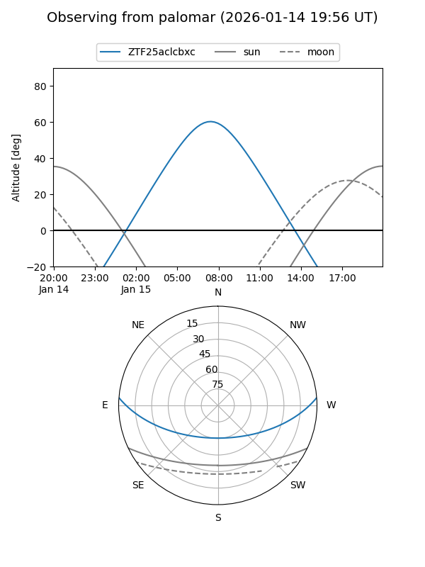
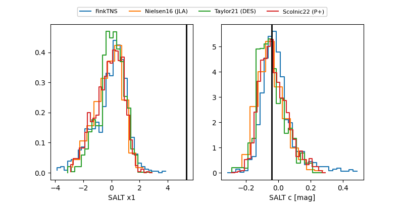

ZTF25aclcbxc
Target ZTF25aclcbxc at 2026-01-17 11:15
Aliases and brokers:
FINK: link
Lasair: link
ALeRCE: link
alt names
ZTF25aclcbxc (ztf,fink_ztf)
Coordinates:
equatorial (ra, dec) = 108.7421,+3.74008
equatorial (HMS+DMS) = 07:14:58.10,+03:44:24.31
galactic (l, b) = (212.2728,+6.93626)
Flags:
Photometry:
last ztfg=20.10, ztfr=19.97
1 ztfg, 1 ztfr detections
Lightcurve

Visibility


Additional plots
